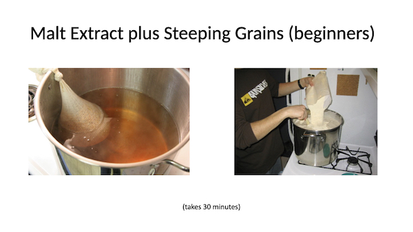
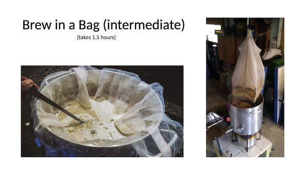

Hi, My name is Johan Goossens and I've been brewing beer as a hobby for over 10 years. You can see my own current setup and recipes on my Brewing page.
In 2018, I did a quick beer brewing 101 with demonstration for a number of my colleagues. When I retired, I was cleaning up files and found the materials I used. So now that I have time on my hands, I decided to publish this knowledge so others can benefit as well. Please use the arrow below to start the tutorial.
Like everything else in the world, making beer is simple as long as you follow the process. In this overview, the homebrew process is split into six steps that are executed sequentially. Each of these steps in a section and you can read them sequentially or use the navigations links at the top of the page.
So you see, it's really simple: you extract sugars, put them in a liquid, boil it and make it bitter, turn the sugar into alcohol, make it pretty and carbonate it. Everybody can do this.
Assuming we see getting all the ingredients as step zero, the fun starts with step one: the mash. So we haven't even started yet and we can already raise a first point. Where do all these crazy brewing terms come from? Well, I have no idea but I always suspected that beer brewers were a little drunk and simply bastardized common words. Just stand in from of a mirror, pull a silly face and say the words mash and wort 20 times. You'll see what I mean.
The idea behind the mash is to extract sugars from fermentables that we can later turn into alcohol. For today's homebrewers there are two and half different ways to handle this step. Firstly, we're going to look at using malt extracts which were created by someone else. Think of it as outsourcing the first step so we don't have to start with a lot of equipment. Using extracts, everybody can make beer on the kitchen stove. Secondly, we'll look at whole grain mashing which is what beer makers have been doing for centuries. This process is a little more complex and requires more equipment.
As stated above, extract brewing is an entry level technique to allow as many people as possible to start with the hobby. Two types of extracts can be purchased from a homebrew store and often they sell them in kits to include the other ingredients as well. In both cases someone else has extracted sugars from fermentables and we just simply add them to water. Dry Malt Extract or DME comes in powder form and Liquid Malt Extract (LME) comes as the name suggests in liquid form.
I've used both types and I have a preference for DME since it can be bought in a very light color and it doesn't have that caramel taste that I so often had with LME. Please note that others swear by LME but they may be making a different style of beer. For my Belgian style Tripels, Witbier and Pale Ales, light DME was better.
Using an extract massively simplifies the early steps (as we will see later). In the end, mashing is as simple as dissolving, mixing and starting the boil.
Earlier I stated there were two and a half ways of mashing and I was referring to a hybrid approach between extract and whole grain brewing. Often kits have a small amount of crushed grain that will be steeped in water of a certain temperature (often around 155F) for 30 minutes or so. You only need a bag for this and it's basically the same idea as steeping thee. The benefit of that is that you can add interesting flavors and it gives the sensation that the beer is more fresh and rich. The entire time I did extract brewing, I used this style.

So if you are only interested in extract brewing, you can skip the rest of this section and go straight to the boiling process. In fact, if you never brewed before, I recommend you do this as the next part of this section is probably the most complicating part of beer making. Once you understand the whole process, come back here and learn how it's done for real.
All beer brewing is based on converting sugars into alcohol so let's have a look at where these sugars come from. Firstly, there are the traditional fermentables like barley, wheat and rye. Most beers are made from sugars extracted from these grains.
It is also possible to use other sources for our sugars and these are typically added to the grains above for flavor (like fruity beers like Kriek Lambic) or to make stronger beers (like adding beet sugar for strong Abbey Ales). It is also possible to make alcoholic beverages by just using these fermentables. Think of wine or hard seltzers but these are obviously not beers.
So how do we extract sugars from grain? Well, let's start with Barley. It turns out it's not easy to get the sugars released from it. The slide below sums up our problem.
So to get to the sugars, a three step process called malting is used. Firstly, the grains are steeped to soften them up and then a germination process is started to open them up. Obviously we don't want to grow fields of barley at this point so we need to stop the process. Through a drying/roasting process, the germination process is halted and the barley is ready for our brewing process.
Since the barley is roasted at the end, different roasting times and temperatures will result in different products just like with coffee. Malts can therefore be roasted lightly to dark which results in a different color and flavor. Lighter beers typically uses malts from a lighter roast and darker beers like stouts use a darker roast.
The level to which the malt is roasted is measured in degrees lovibond which measures the color of the resulting beer. Lighter beers like lagers have a low number and darker beers like stouts have a higher number.
Some of you might already be getting scared at this but but don't fear, the malting process is typically done in large industrial facilities. As home brewers we simply buy the malt in the color we want for our recipes. In fact, I don't know of a single home brewer that malts his/her own grain even though I assume they exist.
Beer making supply stores typically offer up a wide variety of malts and they typically come whole or crushed. I always buy mine crushed as I don't own a malt crusher. My local store crushes the malt to my liking and since I use it immediately, it's just as fresh as when I would do it myself. Many home brewers however crush their own grain as they want full control over the process (e.g. determine coarseness).
Well, we're finally ready to extract those sugars from our malt. I'll first explain the manual way and later explain how we can simplify and/or automate this process.
Sugar extraction is the process of creating sweet wort, which is typically a three step process: mashing to extract the sugars, lautering to filter the wort and sparging to get the last sugars from the grain.
Mashing is where we add warm strike water to the crushed grain which is typically at room temperature. A little bit of math is involved here as we want the combination of warm water and cool grain to end up at the desired mash temperature. Luckily these days there are great apps and websites that will do these calculations for us.
During the mashing process (or at the end), we use the grain bed to filter the sweet wort also called lautering. This is done by circulating liquid from the bottom of the mash tun to the top either by hand or with a pump. Mash tuns typically have false bottoms to support this and the grain bed does a great job at catching the small particles that resulted from crushing the grain.
Once the mashing and lautering processes are completed, it is time to separate the sweet wort from the grain and rinse the grain to extracted every last bit of sugar. This is called sparging and people have come with a lot of ways to do this. Sparging is typically done with water warmer than the wort. As you can see later, if you automate the mashing and lautering process, there are plenty of people who argue that sparging is not even required.
So if this wasn't obvious before, beer brewing is a religion and everybody has their own opinion. I can guarantee you that posting this simple 101 online will draw fire from the high priests of home brewing. Don't be discouraged by these types though, you'll soon be making better beer than they are.
As you figured out, extracting sugars is a complicated process and home brewer ingenuity has gone crazy over the years on how to do this on a small scale and within budget. Firstly, there the people (including me) that used gravity and manual labor to move the wort through the process. This makes for a long brew day with a lot of steps and heavy lifting. As a beer drinker, I alway though this was a good idea as I was burning some of the calories I would consume later.
Secondly, there are people who invest a lot of money and create a mini version of a commercial brewery with stainless steel vessels and pumps. Both this and the manual/gravity method will work but in both cases, you have a lot of stuff to clean at the end of your brew day. Again, this could be a positive as you're burn calories before you consume them.
In my case, I took an intermediate step and went from extract brewing to brew in a bag. With this technique, you are extracting sugars from your grain in the same vessel that you use for the boil. The idea is really simple as you steep your grains in a large brew pot just like steeping thee for the entire city of London in one go (slight exaggeration).
This step allowed me to move to whole grain brewing without a great investment (I already had a fancy brew pot for extract brewing) and I felt like I was moving forward. My only negative was that my sugar extraction efficiency was poor and my beers weren't measuring up to the Belgians I was trying to recreate.

Given that "brew in a bag" was not going to get me to make my favorite Abbey Brews, I did go down the manual/gravity mashing route described above for a while. Unfortunately my patience and endurance were not compatible with this approach and my beer quality became inconsistent and unpredictable. It was time to either go back to extract brewing (nothing wrong with that as I managed to make some great beers using this technique) or to find a different way.
The answer turned out to be an electric all-in-one brewing system that automates the mashing. lautering and boiling process. This is also a significant investment but it simplifies the brewing process and it offers a repeatable process that creates a more consistent outcome. So I've invested in a Braumeister and never looked back.
When you use the manual mashing process, it can be very hard to keep the temperatures at the right level. This is why I always did single step infusions where you try to keep the mashing temperature as constant as possible during the entire mashing process.
Once you move to an all electric system, you can move to a multi-step infusion process where you use different temperatures to extract the sugars. This is the process used by commercial beer brewer as it allows them to extract more and the right kind of sugars to achieve the effect they are after. If you are interest in this, the links at the bottom of this page will recommend books and web site that will explain chemical processes like the acid rest, protein rest, starch conversion or saccharification and diacetyl rest. This stuff will make your brain hurt long before you have a hangover.
As I'm interested in Belgian Ales, I quickly learned of a man called Jean de Clerck who was and probably still is one of the most influential beer brewing scientist. So until I fully understand the chemistry behind the mashing processes, I've adopted his mash schedule for a number of my Belgian recipes.
If you made it to this part of this tutorail, you deserve a medal. The mashing process to extract sugars and create sweet wort, is the most complicated part of beer brewing. you can see why beginners start with extract brewing. I must say however that by investing in electric brewing, I have simplified the process as well and the automation allows for very consistent products. If I could only understand all the chemistry behind all of this so I could reason an outcome rather than rely on trial and error.
Copyright (c) 2019-2021 Johan A. Goossens. All rights reserved.
This work is licensed under the terms of the MIT license.